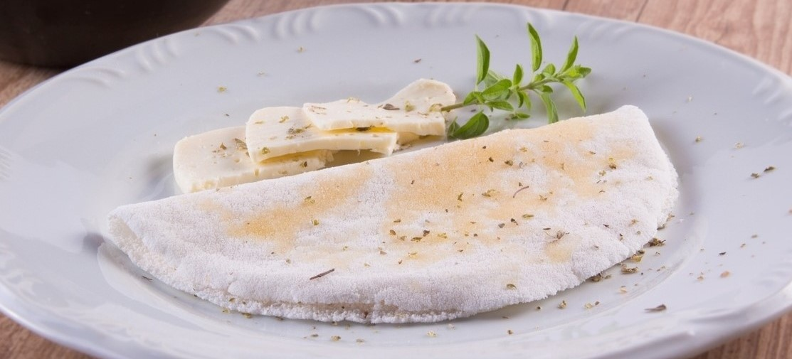
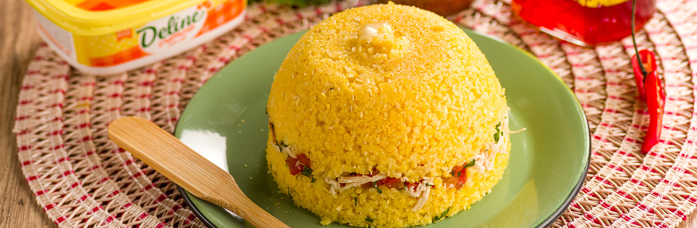

1/4 xícara (chá) de manteiga em temperatura ambiente
10 fatias de queijo de coalho
800 gr de farinha de tapioca
Modo de preparo
Coloque as fatias de queijo de coalho em uma frigideira sobre fogo médio e aqueça até que ele amoleça.
Reserve.
Passe manteiga em cada tapioca ainda quente.
Coloque uma fatia de queijo e dobre ao meio. Se desejar, sirva polvilhado com coco fresco ralado.

Cuscuz recheado de frango
Uma refeição completa
Ingredientes
1 colher (sopa) de manteiga
1 colher (sopa) de cebola picada
1/2 tomate picado
1 xícara (chá) de frango cozido e desfiado
Sal, pimenta e coentro a gosto
1/2 xícara (chá) de flocos de milho para cuscuz (flocão)
1/2 colher (chá) de sal
1 xícara (chá) de queijo coalho picado
2 colheres (sopa) de manteiga
Modo de preparo
Em uma panela pequena, coloque a manteiga e leve ao fogo médio.
Adicione a cebola, o tomate e misture.
Coloque o frango, e tempere com sal, pimenta e finalize com o coentro. Reserve
Em um recipiente, coloque o flocão, o sal e adicione água aos poucos até que fique uma “farofa úmida” ou ao apertar com a palma da mão, forme um bolinho sem desmanchar.
Deixe descansar por mais ou menos 10 minutos.
Após descansar, coloque metade em uma forma de cuscuzeira, recheie com o frango reservado e cubra com o restante do flocão hidratado.
Leve para cozinhar em fogo médio e siga as instruções da cuscuzeira.
Quando estiver pronto, desenforme e sirva com a manteiga.

Torta búlgara
A iguaria baiana pouco conhecida
Ingredientes
200 gramas de chocolate em pó (50% cacau)
200 gramas de manteiga sem sal
200 gramas de açúcar refinado
3 ovos inteiros
2 gemas
100 gramas de creme de leite (fresco ou de caixinha)
Modo de preparo
Coloque as fatias de queijo de coalho em uma frigideira sobre fogo médio e aqueça até que ele amoleça.
Reserve.
Passe manteiga em cada tapioca ainda quente.
Coloque uma fatia de queijo e dobre ao meio. Se desejar, sirva polvilhado com coco fresco ralado.